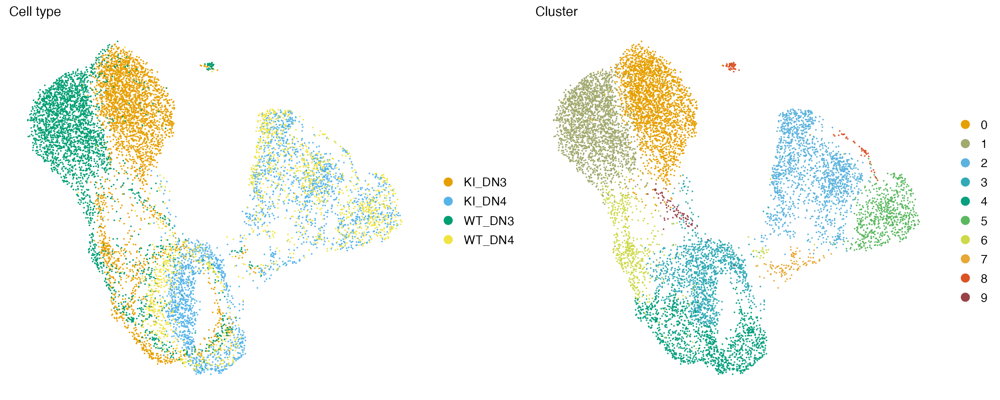
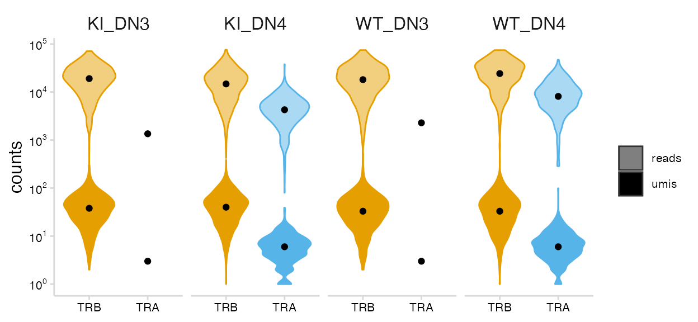
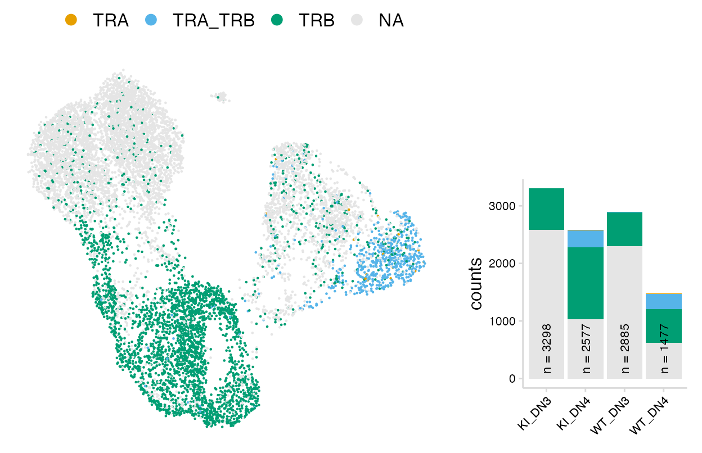
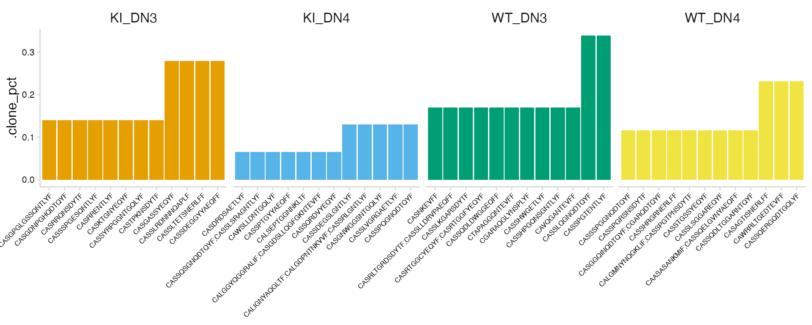
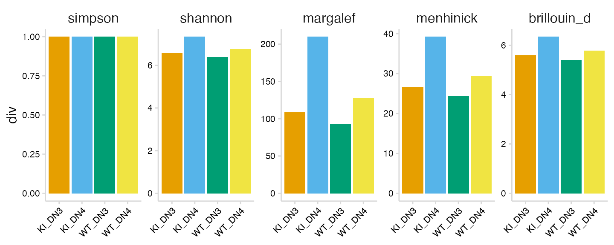
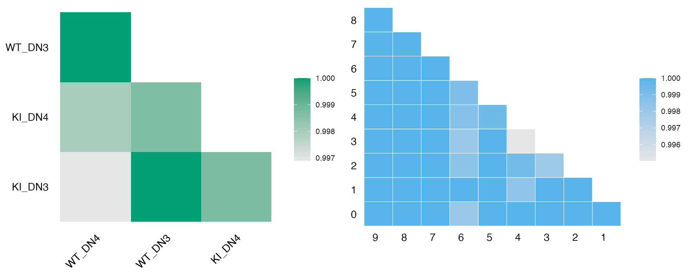
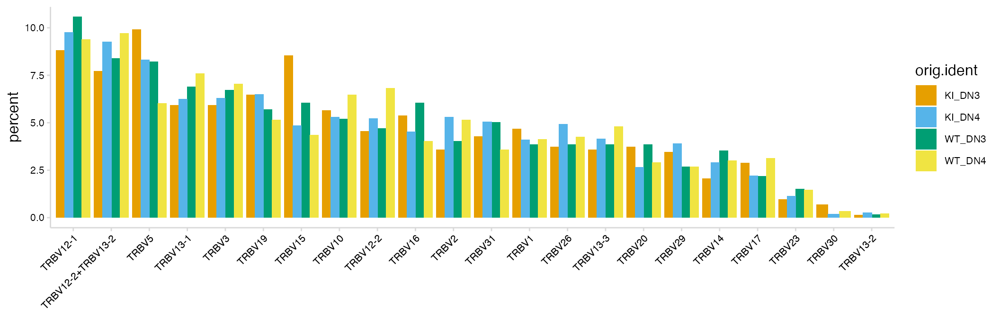
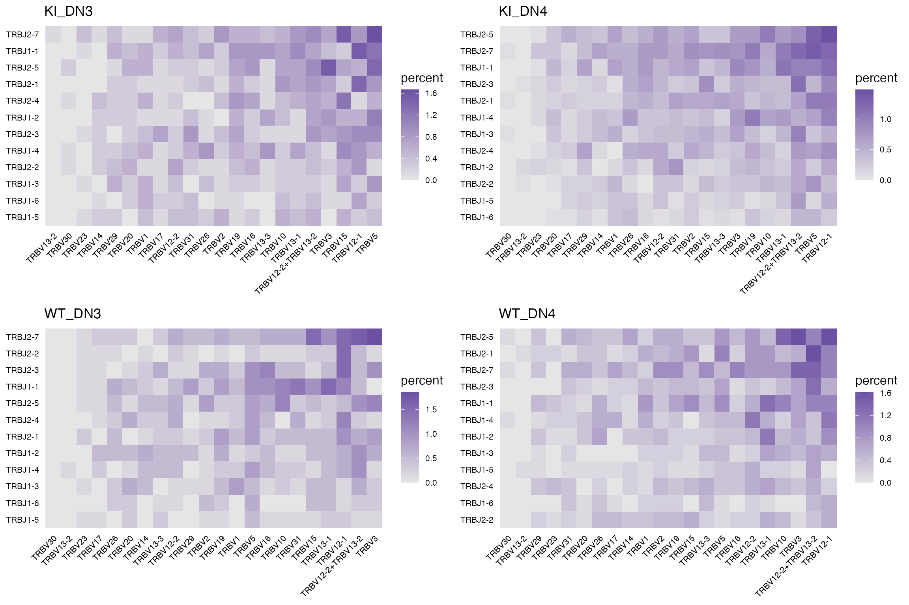
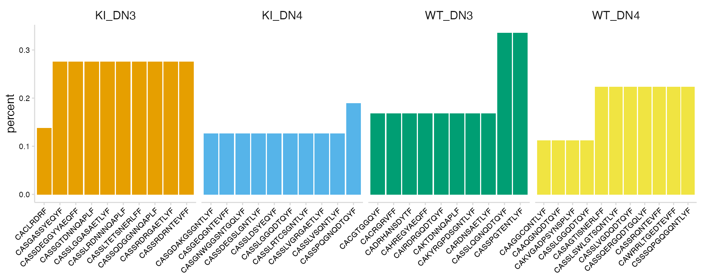

tcr.RmdFor this vignette we are using single-cell TCR data provided by the Rincon lab. Thymocytes were collected for wild type and mutant mice and sorted for two developmental timepoints, DN3 and DN4. UMAP projections are shown below with cells colored by sample and cell cluster (based on gene expression).

import_vdj() takes the output files from Cell Ranger and adds clonotype information to the meta.data for an existing Seurat object. For cells with multiple chains, the information for each chain is stored as a single row, separated by a ‘;’ (or a character specified by sep). For cells that do not have any VDJ sequencing data, NAs will be added to the meta.data.
If the Seurat object contains data for multiple runs, a vector containing paths to the VDJ data for each sample can be given. If multiple paths are provided, cell prefixes should be included as names for the vector.
# Create vector of paths pointing to cellranger output paths <- c( KI_DN3_GE = "../data/tcr/KI_DN3_TCR", KI_DN4_GE = "../data/tcr/KI_DN4_TCR", WT_DN3_GE = "../data/tcr/WT_DN3_TCR", WT_DN4_GE = "../data/tcr/WT_DN4_TCR" ) so_tcr <- import_vdj( sobj_in = so_tcr, # Seurat object vdj_dir = paths, # cellranger directories prefix = "", # Prefix to add to new meta.data columns filter_contigs = TRUE # Only include productive chains )
Take a look at the meta.data to see the V(D)J data added to the object.
vdj_cols <- c( "clonotype_id", "cdr3", "chains", "v_gene", "j_gene", "reads", "umis" ) so_tcr@meta.data %>% as_tibble() %>% filter(!is.na(clonotype_id)) %>% select(all_of(vdj_cols)) #> # A tibble: 3,850 x 7 #> clonotype_id cdr3 chains v_gene j_gene reads umis #> <chr> <chr> <chr> <chr> <chr> <chr> <chr> #> 1 WT_DN3_GE_clono… CAVQGANTEVFF TRB TRBV17 TRBJ1-1 42590 72 #> 2 WT_DN3_GE_clono… CASSHPGQNSGNTLYF TRB TRBV5 TRBJ1-3 12670 17 #> 3 WT_DN3_GE_clono… CASSHWGETLYF TRB TRBV5 TRBJ2-3 31772 46 #> 4 WT_DN3_GE_clono… CGARAQGLYNSPLYF TRB TRBV20 TRBJ1-6 7124 15 #> 5 WT_DN3_GE_clono… CTAPAGGQNTEVFF TRB TRBV1 TRBJ1-1 4744 8 #> 6 WT_DN3_GE_clono… CASSQDLDWGGEQFF TRB TRBV5 TRBJ2-1 34966 52 #> 7 WT_DN3_GE_clono… CASRTGGCYEQYF;C… TRB;TRB TRBV13-1;T… TRBJ2-7;… 4166;6… 7;171 #> 8 WT_DN3_GE_clono… CASSPGTENTLYF TRB TRBV12-2 TRBJ2-4 9180 18 #> 9 WT_DN3_GE_clono… CASSLKGARSDYTF TRB TRBV12-1 TRBJ1-2 19742 29 #> 10 WT_DN3_GE_clono… CASRLTGRDSDYTF;… TRB;TRB TRBV15;TRB… TRBJ1-2;… 28860;… 48;22 #> # … with 3,840 more rows
The read support for each chain can be visualized with the plot_reads() function. This will create plots summarizing the number of UMIs and total reads that were obtained for each chain.
plot_reads( sobj_in = so_tcr, # Seurat object chain_col = "chains", # Column containing chains for each cell cluster_col = "orig.ident", # Column containing labels to group by plot_colors = vdj_colors ) + guides(fill = FALSE, color = FALSE)

The djvdj package provides several functions that can be used to manipulate the object meta.data, which is useful for identifying cells that should be removed. This includes a function to modify meta.data columns (mutate_vdj()) and a function to filter cells from the object (filter_vdj()). Since cells can have multiple values present in each V(D)J column (separated by a semicolon), when using these functions each string of V(D)J values for a cell should be thought of as a vector.
For example using filter_vdj() we can remove V(D)J data for cells that have minimal UMI support. To do this we use the expression all(umis > 2). This means that all semicolon-separated values present in the umis column must be greater than 2. Setting filter_cells = FALSE means the cell will remain in the object, but the V(D)J data will be removed.
so_tcr <- filter_vdj( sobj_in = so_tcr, # Seurat object filt = all(umis > 2), # Condition for filtering filter_cells = FALSE # Should cells be removed from object ) # Take a look at the meta.data so_tcr@meta.data %>% as_tibble() %>% filter(!is.na(clonotype_id)) %>% select(all_of(vdj_cols)) #> # A tibble: 3,725 x 7 #> clonotype_id cdr3 chains v_gene j_gene reads umis #> <chr> <chr> <chr> <chr> <chr> <chr> <chr> #> 1 WT_DN3_GE_clono… CAVQGANTEVFF TRB TRBV17 TRBJ1-1 42590 72 #> 2 WT_DN3_GE_clono… CASSHPGQNSGNTLYF TRB TRBV5 TRBJ1-3 12670 17 #> 3 WT_DN3_GE_clono… CASSHWGETLYF TRB TRBV5 TRBJ2-3 31772 46 #> 4 WT_DN3_GE_clono… CGARAQGLYNSPLYF TRB TRBV20 TRBJ1-6 7124 15 #> 5 WT_DN3_GE_clono… CTAPAGGQNTEVFF TRB TRBV1 TRBJ1-1 4744 8 #> 6 WT_DN3_GE_clono… CASSQDLDWGGEQFF TRB TRBV5 TRBJ2-1 34966 52 #> 7 WT_DN3_GE_clono… CASRTGGCYEQYF;C… TRB;TRB TRBV13-1;T… TRBJ2-7;… 4166;6… 7;171 #> 8 WT_DN3_GE_clono… CASSPGTENTLYF TRB TRBV12-2 TRBJ2-4 9180 18 #> 9 WT_DN3_GE_clono… CASSLKGARSDYTF TRB TRBV12-1 TRBJ1-2 19742 29 #> 10 WT_DN3_GE_clono… CASRLTGRDSDYTF;… TRB;TRB TRBV15;TRB… TRBJ1-2;… 28860;… 48;22 #> # … with 3,715 more rows
To further illustrate how filter_vdj() works we can look at row 7 shown above, which has two beta chains with 7 UMIs for the first and 171 UMIs for the second. When filtering this row we are evaluating whether the following condition is TRUE:
The V(D)J data imported from Cell Ranger will include clonotypes that do not have paired alpha and beta chains. Using the mutate_vdj() function, we can add a new cell label to the meta.data to allow for easy visualization of these cells.
In this example we create a new column (uniq_chains) that summarizes the unique chains identified for each cell. We can then overlay these cell labels on a UMAP projection.
so_tcr <- mutate_vdj( sobj_in = so_tcr, # Seurat object uniq_chains = str_c(unique(chains), collapse = "_") # New column ) # Take a look at the meta.data so_tcr@meta.data %>% as_tibble() %>% filter(!is.na(clonotype_id), n_chains > 2) %>% select(all_of(vdj_cols), uniq_chains) #> # A tibble: 83 x 8 #> clonotype_id cdr3 chains v_gene j_gene reads umis uniq_chains #> <chr> <chr> <chr> <chr> <chr> <chr> <chr> <chr> #> 1 WT_DN4_GE_cl… CALVMNYNQ… TRA;TR… TRAV13-1… TRAJ23;T… 16886… 13;1… TRA_TRB #> 2 WT_DN4_GE_cl… CAAYSGGSN… TRA;TR… TRAV14-3… TRAJ53;T… 12106… 14;8… TRA_TRB #> 3 WT_DN4_GE_cl… CVVVDLPGT… TRA;TR… TRAV11;T… TRAJ28;T… 6974;… 7;11… TRA_TRB #> 4 WT_DN4_GE_cl… CAARRGSNY… TRA;TR… TRAV14D-… TRAJ33;T… 20144… 13;3… TRA_TRB #> 5 WT_DN4_GE_cl… CVAHNNAGA… TRA;TR… TRAV11D;… TRAJ39;T… 7230;… 5;10… TRA_TRB #> 6 WT_DN4_GE_cl… CAASTSGSW… TRA;TR… TRAV7D-2… TRAJ22;T… 18152… 11;8… TRA_TRB #> 7 WT_DN4_GE_cl… CALLASSSF… TRA;TR… TRAV12-1… TRAJ50;T… 12942… 19;5… TRA_TRB #> 8 WT_DN4_GE_cl… CAPGTGGYK… TRA;TR… TRAV13-2… TRAJ12;T… 11882… 13;4… TRA_TRB #> 9 WT_DN4_GE_cl… CAASALRDS… TRA;TR… TRAV14N-… TRAJ13;T… 13372… 8;15… TRA_TRB #> 10 WT_DN4_GE_cl… CAPDTNAYK… TRA;TR… TRAV13D-… TRAJ30;T… 11016… 7;13… TRA_TRB #> # … with 73 more rows
For row 1 shown above, this is equivalent to:
We can then overlay the new labels present in the uniq_chains column on a UMAP projection. djvdj also provides a simple wrapper function (plot_cell_count()) that will summarize the fraction of cells that belong to each group.
chain_cols <- vdj_colors names(chain_cols) <- unique(so_tcr$uniq_chains) # Chains UMAP chain_umap <- so_tcr %>% DimPlot( group.by = "uniq_chains", cols = chain_cols, na.value = "grey90" ) + theme_nothing() + theme(legend.position = "top") # Chains bar graphs chain_bars <- so_tcr %>% plot_cell_count( x = "orig.ident", # Cell labels to plot fill_col = "uniq_chains", # Cell labels to color each bar plot_colors = chain_cols, yaxis = "counts" ) + theme( plot.margin = unit(c(120, 10, 10, 10), "pt"), legend.position = "none" ) # Final figure plot_grid( chain_umap, chain_bars, rel_widths = c(1, 0.55), nrow = 1 )

Clonotypes that lack paired alpha and beta chains can be filtered using filter_vdj(). However, for this dataset we expect a large fraction of cells to have unpaired chains, so we can skip this step.
so_filt <- filter_vdj( sobj_in = so_tcr, # Seurat object filt = all(c("TRA", "TRB") %in% chains), # Condition for filtering filter_cells = FALSE # Should cells be removed )
To identify the top clonotypes in each sample or cluster, clonotype abundance can be calculated using the calc_abundance() function. These calculations can be performed on a per-cluster or per-sample basis by also providing a meta.data column containing cell labels.
so_tcr <- calc_abundance( sobj_in = so_tcr, # Seurat object cluster_col = "orig.ident" # meta.data column containing cell labels )
For each ‘calc’ function provided by djvdj, there is a matching ‘plot’ function that will generate a summary plot. The plot_abundance() function will plot clonotypes ranked by abundance.
plot_abundance( sobj_in = so_tcr, # Seurat object cluster_col = "orig.ident", # meta.data column containing cell labels label_col = "cdr3", # meta.data column containing labels n_clonotypes = 12, # Number of top clonotypes plot_colors = vdj_colors ) + theme( legend.position = "none", axis.text.x = element_text(size = 6) )

The function calc_diversity() will calculate repertoire diversity on number of cells that share each clonotype. Using the cluster_col argument, any meta.data column containing cell labels can be used for calculations. calc_diversity() uses the R package abdiv for performing diversity calculations and any abdiv diversity function can be specified using the method argument.
Possible methods for calculating diversity include:
[1] "berger_parker_d" "brillouin_d" "dominance" "heip_e"
[5] "invsimpson" "kempton_taylor_q" "margalef" "mcintosh_d"
[9] "mcintosh_e" "menhinick" "pielou_e" "richness"
[13] "shannon" "simpson" "simpson_e" "strong" In this example we are calculating the Shannon diversity for each sample in the orig.ident meta.data column.
so_tcr <- calc_diversity( sobj_in = so_tcr, # Seurat object cluster_col = "orig.ident", # meta.data column containing cell labels method = abdiv::shannon # abdiv method to use )
The plot_diversity() function will create plots summarizing repertoire diversity for each sample. A named list of functions to run can also be passed to plot multiple metrics. Four different diversity metrics are shown in the example below.
# Metrics to plot fns <- list( "simpson" = abdiv::simpson, "shannon" = abdiv::shannon, "margalef" = abdiv::margalef, "menhinick" = abdiv::menhinick, "brillouin_d" = abdiv::brillouin_d ) plot_diversity( sobj_in = so_tcr, # Seurat object cluster_col = "orig.ident", # meta.data column containing cell labels method = fns, # abdiv method to use plot_colors = vdj_colors ) + theme(axis.text.x = element_text(angle = 45, hjust = 1))

To compare repertoires for different samples or clusters, calc_similarity() can calculate a variety of different similarity metrics. The cluster_col should be used to specify the meta.data column containing cell labels for comparison. Like calc_diversity(), an abdiv function can be specified with the method argument.
Possible methods for calculating repertoire similarity include:
[1] "binomial_deviance" "bray_curtis"
[3] "bray_curtis_balanced" "bray_curtis_gradient"
[5] "canberra" "chebyshev"
[7] "chord" "clark_coefficient_of_divergence"
[9] "correlation_distance" "cosine_distance"
[11] "cy_dissimilarity" "euclidean"
[13] "geodesic_metric" "hamming"
[15] "hellinger" "horn_morisita"
[17] "jaccard" "jaccard_nestedness"
[19] "jaccard_turnover" "kulczynski_first"
[21] "kulczynski_second" "kullback_leibler_divergence"
[23] "manhattan" "mean_character_difference"
[25] "minkowski" "modified_mean_character_difference"
[27] "morisita" "rms_distance"
[29] "rogers_tanimoto" "russel_rao"
[31] "ruzicka" "ruzicka_balanced"
[33] "ruzicka_gradient" "sokal_michener"
[35] "sokal_sneath" "sorenson"
[37] "sorenson_nestedness" "sorenson_turnover"
[39] "weighted_kulczynski_second" "yule_dissimilarity" By default calc_similarity() will add a new meta.data column for each comparison. In this example we are calculating the jaccard dissimilarity index for all combinations of cell labels present in the orig.ident column.
so_tcr <- calc_similarity( sobj_in = so_tcr, # Seurat object cluster_col = "orig.ident", # meta.data column containing cell labels method = abdiv::jaccard # abdiv method to use )
A heatmap summarizing the results can be generated using the plot_similarity() function. Here we are creating two heatmaps, one to compare the different samples and one to compare cell clusters.
# Sample heatmap ident_heat <- plot_similarity( sobj_in = so_tcr, # Seurat object cluster_col = "orig.ident", # meta.data column containing cell labels method = abdiv::jaccard, # Method to use plot_colors = "#009E73" ) + theme(legend.text = element_text(size = 8)) # Cluster heatmap clust_heat <- plot_similarity( sobj_in = so_tcr, cluster_col = "seurat_clusters", method = abdiv::jaccard, plot_colors = "#56B4E9", size = 0.2, # Additional ggplot options color = "white" # Additional ggplot options ) + theme( legend.text = element_text(size = 8), axis.text.x = element_text(angle = 0) ) # Combine heatmaps plot_grid(ident_heat, clust_heat, align = "h")

The V(D)J data imported from Cell Ranger also includes the specific genes detected for each cell. The function calc_usage() can be used to calculate the fraction of cells that express different V(D)J genes. This function will produce a table summarizing the results. To only include results for a certain chain, the chain and chain_col arguments can be used to specify the meta.data column containing the chains detected for each cell. By default the results for all chains will be included.
In this example we are summarizing the usage of different V genes for the TRB chain
calc_usage( sobj_in = so_tcr, # Seurat object gene_cols = "v_gene", # meta.data column containing genes cluster_col = "orig.ident", # meta.data column containing cell labels chain = "TRB", # Chain to use for filtering genes chain_col = "chains" # meta.data column containing chains ) #> # A tibble: 92 x 5 #> v_gene orig.ident n_cells freq pct #> <chr> <chr> <dbl> <int> <dbl> #> 1 None WT_DN3 592 0 0 #> 2 None WT_DN4 866 11 1.27 #> 3 None KI_DN3 719 0 0 #> 4 None KI_DN4 1548 6 0.388 #> 5 TRBV1 WT_DN3 592 23 3.89 #> 6 TRBV1 WT_DN4 866 37 4.27 #> 7 TRBV1 KI_DN3 719 34 4.73 #> 8 TRBV1 KI_DN4 1548 64 4.13 #> 9 TRBV10 WT_DN3 592 31 5.24 #> 10 TRBV10 WT_DN4 866 57 6.58 #> # … with 82 more rows
The function plot_usage() can be used to summarize these results. Using the yaxis argument, the percent or absolute count (frequency) can be used for plotting. The genes plotted can also be selected using the plot_genes argument, or the number of top genes (most frequent) to plot can be specified with n_genes.
plot_usage( sobj_in = so_tcr, # Seurat object gene_cols = "v_gene", # meta.data column(s) containing genes cluster_col = "orig.ident", # meta.data column containing cell labels type = "bar", # Type of plot chain = "TRB", # Chain to use for filtering genes plot_genes = NULL, # A list of genes to plot n_genes = NULL, # The number of top genes to plot plot_colors = vdj_colors )

By passing multiple columns to gene_cols, the frequency that different genes are used together can also be summarized.
calc_usage( sobj_in = so_tcr, # Seurat object gene_cols = c("v_gene", "j_gene"), # meta.data column(s) containing genes cluster_col = "orig.ident", # meta.data column containing cell labels chain = "TRB" # Chain to use for filtering genes )
When multiple gene columns are passed to plot_usage(), a list of plots will be returned, one for each cell label in the cluster_col column.
ggs <- plot_usage( sobj_in = so_tcr, # Seurat object gene_cols = c("v_gene", "j_gene"), # meta.data column(s) containing genes cluster_col = "orig.ident", # meta.data column containing cell labels chain = "TRB", # Chain to use for filtering genes plot_colors = "#6A51A3" ) %>% imap(~ .x + ggtitle(.y)) plot_grid(plotlist = ggs)

The calc_usage() and plot_usage() functions can also be used to calculate the fraction of cells that have a certain CDR3 sequence. To do this, the meta.data column containing the CDR3 sequences for each cell can be passed to the gene_cols argument. The plot can be divided into facets based on sample using simple ggplot2 commands.
plot_usage( sobj_in = so_tcr, gene_cols = "cdr3", # Column containing CDR3 sequences cluster_col = "orig.ident", type = "bar", chain = "TRB", plot_colors = vdj_colors, n_genes = 12 # Number of CDR3 sequences to plot ) + facet_wrap(~ orig.ident, nrow = 1, scales = "free_x") + theme(legend.position = "none")
